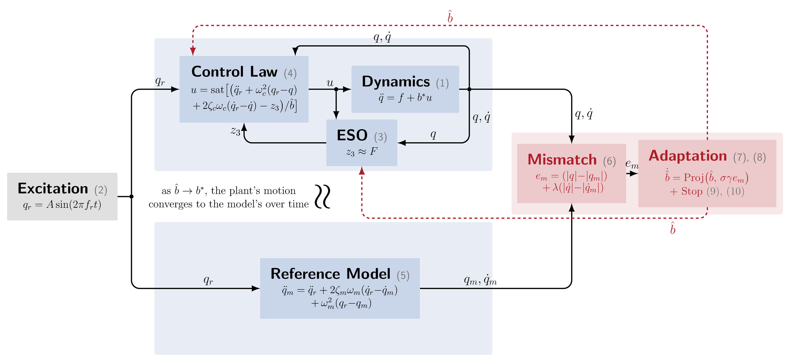
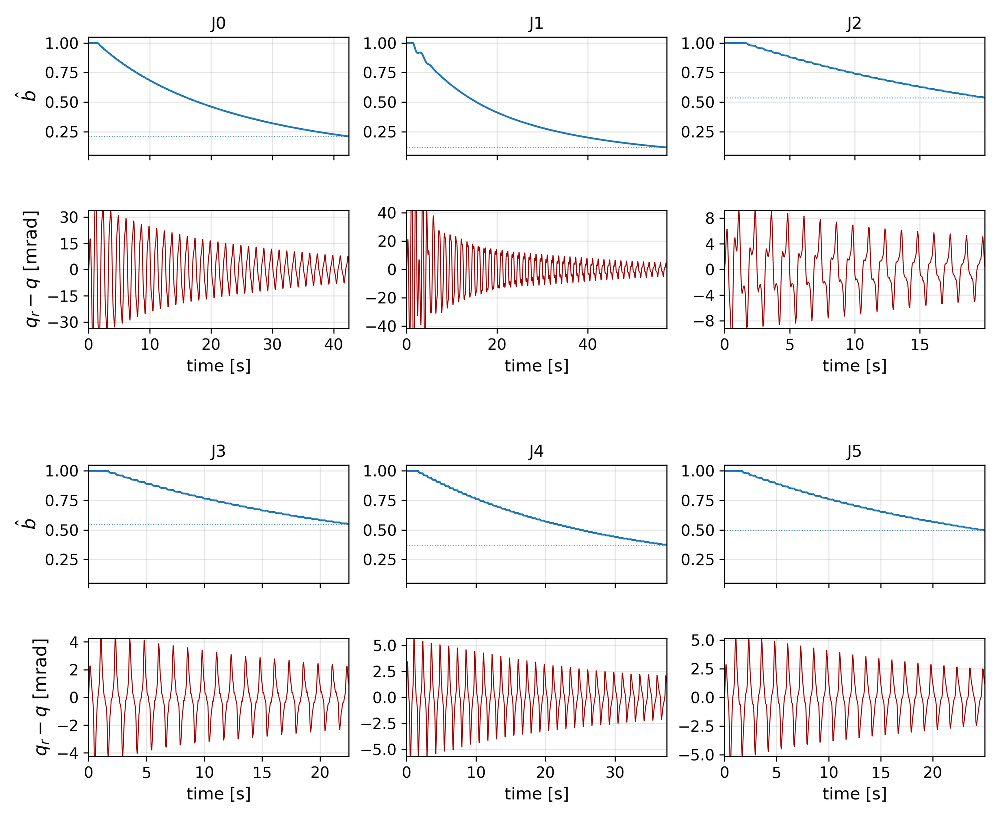
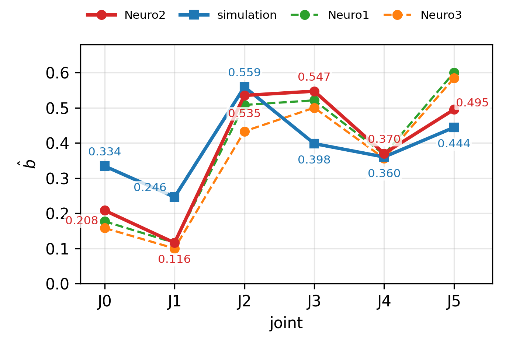
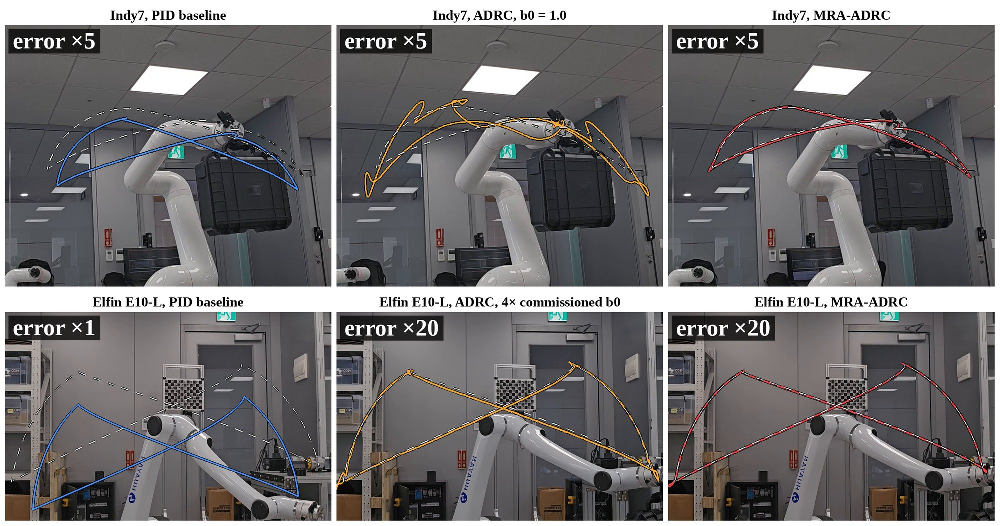
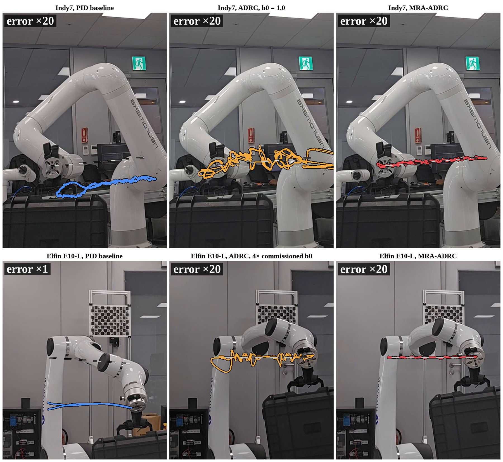
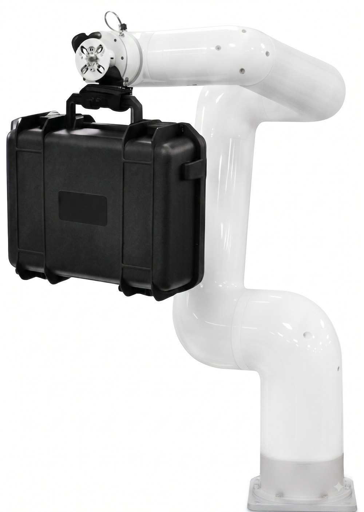

Method
The extended state observer of ADRC estimates and cancels the lumped disturbance, so the loop needs little model knowledge, yet one number is still left to the designer: the control-input gain b0, which scales the control effort and is usually tuned joint by joint on the machine. MRA-ADRC closes that gap with two ideas: a reference-model mismatch that tells, from motion alone, whether the current gain estimate is too high or too low, and a cycle-envelope dead-zone that decides when the adaptation is done.

1. A Reference-Model Mismatch Drives a Scalar Adaptation
During a bounded sinusoidal calibration motion, a reference model runs on the same excitation as the plant. The absolute-value position–velocity mismatch between the two responses is a scalar whose sign says whether b̂ is above or below the true gain, and a projected gradient step on that scalar updates b̂ online. No model-derived regressor and no torque sensing are required, and b̂ is the only signal returned to the ADRC loop, where it enters the control law and the observer at the two dashed points of the diagram.
2. A Cycle-Envelope Dead-Zone Stops the Adaptation Automatically
The adaptation is frozen once the mismatch envelope stays below a prescribed width for two consecutive cycles of the calibration motion. The width is set from the hardware floor, measured by a short probe pass before adaptation starts, so the stop is decided by the machine rather than by an operator watching a plot. On the Indy7 each joint stops within 20 to 57 seconds, and the six frozen values form the profile deployed in all closed-loop evaluations on that arm.
3. What the Analysis Guarantees
- Uniformly ultimately bounded tracking on an analytical safe set of gain estimates.
- Local exponential convergence of the averaged gain estimate to a residual-shifted equilibrium.
- A stopping-error bound that is linear in the dead-zone width.
The main contributions of the paper can be summarized as follows.
- An online gain-commissioning law that adds model-reference adaptation to the ADRC loop, with proofs of bounded tracking, local convergence and stopping accuracy.
- A fully automatic commissioning procedure whose commissioned profile transfers across units of the same model, so one run for each model replaces the unit-by-unit factory tuning pass.
- Hardware validation of the closed-loop benefit, namely better tracking than the deployed production controller under a 4.5 kg payload absent at commissioning, at matched actuator effort.
- Validation on multiple Neuromeka Indy7 units, a URDF-matched simulation, and a second manufacturer's Huayan Robotics Elfin E10-L, where the closed-loop result replicates and the full procedure commissions all six joints automatically.
- An evaluation that holds the ADRC loop fixed and changes only the gain, isolating the contribution of commissioning itself, on both arms and on a Cartesian straight line.
Hardware Results
All results below are measured on hardware. On the Indy7 the commissioned profile recovers 88% of the tracking degradation caused by the initial gain mismatch, and one profile deployed on four units tracks a 4.5 kg payload with 16× lower error than the production controller at equal command torque. With the ADRC loop held fixed, swapping in the commissioned gain brings the tool-tip error on a Cartesian line from 4.44 mm under PID to 0.45 mm, and the same procedure commissions all six joints of a second manufacturer's arm.
Commissioning on the Machine
Each joint of the Indy7 is commissioned in a single run from the coarse initial estimate binit = 1.0. The estimate descends and freezes at the automatic stop, and the six frozen values share their shape with a URDF-matched simulation, low at the base, high at the wrist, with a dip at J4.


One Profile Across Four Units
The commissioned profile is deployed unchanged on four Indy7 units that were not used for commissioning, and each carries a 4.5 kg payload absent at commissioning. Against the deployed production controller the aggregate tracking error is 15.8× to 16.6× lower while the command torque RMS is equal within a few percent, so the improvement does not come from extra effort.

Same ADRC Loop, Only the Gain Changes
The comparisons above mix the commissioned gain with the observer. This evaluation holds the ADRC loop fixed and swaps only b0, with a joint PID loop as a reference, under the 4.5 kg payload on both arms. Joint entries are quadratic means over the six joints, the tool error is measured on the Cartesian line, and torque is the commanded RMS on the square.
| Arm | Controller | Square mrad | Line mrad | Tool RMS mm | Tool max mm | Torque N·m |
|---|---|---|---|---|---|---|
| Indy7 | PID baseline | 6.61 | 3.71 | 4.44 | 6.20 | 42.9 |
| ADRC, b0 = 1.0 (uncommissioned) | 10.69 | 1.63 | 2.06 | 7.59 | 44.5 | |
| MRA-ADRC | 1.54 | 0.42 | 0.45 | 2.55 | 42.7 | |
| Elfin E10-L | PID baseline | 41.28 | 53.92 | 128.06 | 168.77 | 50.2 |
| ADRC, 4× commissioned b0 | 0.88 | 0.57 | 0.59 | 2.95 | 49.3 | |
| MRA-ADRC | 0.43 | 0.22 | 0.18 | 0.87 | 49.5 |


Experimental Platforms
Both arms run in torque mode at the joint level and carry the same 4.5 kg payload. The commissioning procedure, including the hardware floor measurement, was run end to end on both, and the same closed-loop evaluation was repeated on each.
